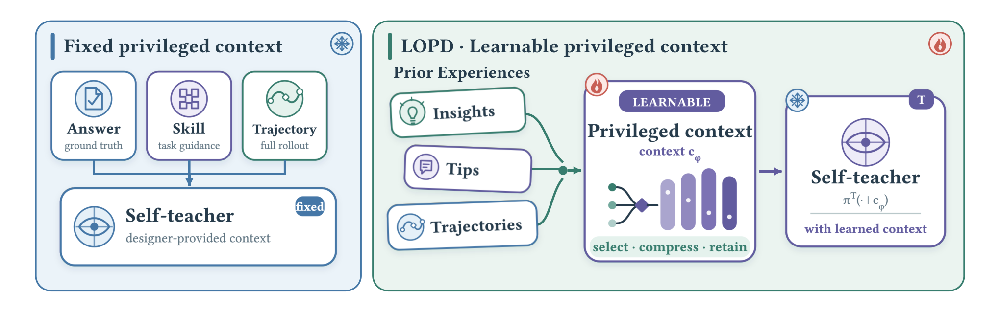
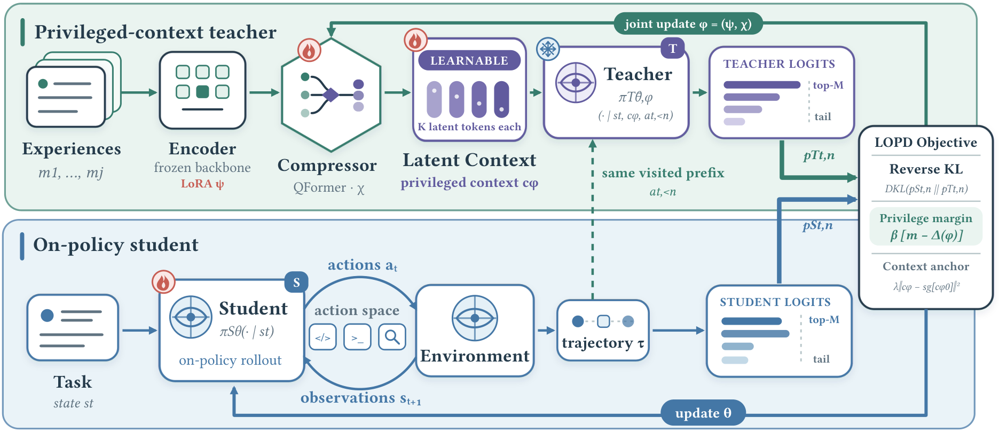

LOPD: Latent On-Policy Self-Distillation with an End-to-End Learnable Privileged Context
TL;DR
- LOPD (arXiv 2608.13040; Guibin Zhang, Jiayang Lyu, Ran Sun, Xinlei Yu, Haoyu Zhao, Qibing Ren, Shuicheng Yan) attacks the weak point of on-policy self-distillation (OPSD): every existing variant hand-designs what privileged context the self-teacher sees (answers, feedback, skills, trajectories). LOPD makes the privileged context itself learnable end-to-end — retrieved past experiences are compressed into continuous latent tokens that condition the teacher.
- A privileged-margin objective is the load-bearing trick: without it, the distillation gradient degrades the latent context (EnvScaler reward drops from 0.573 to 0.551); with margin m=0.05 it climbs to 0.637.
- Across agentic tool use (EnvScaler, BFCL-v3, ACEBench) and code generation (LiveCodeBench, HumanEval+/MBPP+) on Qwen3-4B/8B and OLMo3-7B, LOPD beats RLVR/GRPO and the OPSD family (OPSD, SDPO, Skill-SD), and surpasses GRPO and Skill-SD using less than 30% of their rollout budget.
Why this matters
The OPSD recipe — let a privileged self-teacher densely supervise the student's own rollouts — has been the most token-efficient alternative to RLVR tracked in this list all year. But its scaling story has a human in the loop: someone has to decide, per domain, whether the teacher's edge is the ground-truth answer, a critique, a distilled skill file, or a replayed trajectory. That design choice is exactly the kind of hand-crafted scaffolding that history suggests gets replaced by something learned. LOPD is the first paper I've tracked that closes this loop: the mapping from raw experience to the teacher's privileged conditioning is itself trained by the distillation objective, so the system decides what past experience is worth injecting and in what (continuous) form. If this holds up beyond 8B models, "what should the teacher know?" stops being a research question and becomes a parameter. The rollout-efficiency claim matters just as much: dense token-level supervision at less than 30% of GRPO's rollout budget is the difference between self-improvement loops that need a cluster and ones that run continually alongside deployment.

Figure 1 from the paper: from sparse-reward RLVR to OPSD with designer-specified privileged artifacts, to LOPD, where the teacher's privileged context is composed from retrieved experience and learned end-to-end.The core idea
Standard OPSD trains a student policy \( \pi^S_\theta \) on its own trajectories, with the supervision signal coming from a teacher that shares the same weights but additionally sees a fixed privileged context \( c_{\mathrm{fix}} \):
where \( s_t \) is the state at turn \( t \), \( a_{t,<n} \) the action prefix, \( \mathrm{sg} \) stop-gradient, and \( D \) a token-level divergence (notation follows the paper's Eq. 3, lightly re-typeset). LOPD's move is to replace \( c_{\mathrm{fix}} \) with a learned constructor \( c_\phi = \Phi_\phi(x, \mathcal{E}) = \langle e_1\rangle \oplus \cdots \oplus \langle e_K\rangle \): retrieve experiences \( \mathcal{E} \) relevant to task \( x \), encode them, and compress them into \( K \) continuous latent tokens that are prepended to the teacher's input. Because the tokens are continuous, gradients flow from the distillation loss through the teacher into the constructor — the privileged context is optimized for how much it actually helps the teacher supervise, not for how plausible it looks as text. Crucially, all of this machinery (retriever, encoder, compressor, latent tokens) is training-time only; the deployed artifact is the bare student.
How it works
Experience → latent context. For each task, a dense-embedding retriever pulls the J=3 most similar task–trajectory pairs from an offline bank of successful trajectories. Each retrieved experience \( m_j \) is encoded with the frozen backbone plus LoRA adapters, \( H_j = \mathrm{Enc}_\psi(x, m_j) \), and a lightweight QFormer-style compressor with learned queries cross-attends into K=32 latent tokens per experience: \( E_j = \mathrm{Comp}_\chi(H_j; Q_\chi) \). Concatenating these gives the privileged context \( c_\phi \), with \( \phi=(\psi,\chi) \).
Distillation. The student rolls out on-policy; a frozen teacher copy \( \pi^T_{\bar\theta,\phi} \) re-scores every visited prefix with the latent context attached. The loss is a weighted KL over top-M-plus-tail distributions at each prefix (paper Eq. 10):
The privileged-margin constraint. Joint optimization has a failure mode: the easiest way to shrink the KL is to make the teacher less informed, collapsing \( c_\phi \) toward uselessness. LOPD counters by requiring the teacher to stay measurably better than the student on outcome-weighted log-probabilities. Define the per-token privilege \( \delta_{t,n}(\phi) = \log \pi^T_{\bar\theta,\phi}(a_{t,n}\mid s_t,c_\phi,a_{t,<n}) - \mathrm{sg}[\log \pi^S_\theta(a_{t,n}\mid s_t,a_{t,<n})] \) and its advantage-weighted mean \( \Delta(\phi) \) with \( A(\tau)=2r(\tau)-1 \); the full objective is a Lagrangian (paper Eq. 12–13):
with margin threshold m=0.05, a dual variable \( \beta \) updated by gradient ascent, and a proximal term keeping \( c_\phi \) near its initialization \( c_{\phi_0} \). Intuitively: the teacher must assign higher likelihood than the student to actions from successful trajectories (and lower to failed ones) by at least the margin, or \( \beta \) grows and forces the constructor to re-earn its privilege.
# LOPD training loop (Algorithm 1, condensed)
init: student pi_S(theta); frozen teacher copy pi_T(theta_bar, phi);
composer Phi_phi from phi_0; experience bank B; margin m; beta = 0
for each iteration:
sample tasks {x} from D
for each task x:
tau ~ pi_S(.|x) # on-policy student rollout
r = V(tau); A = 2r - 1 # verifier reward -> advantage
E = Retrieve(x, B, J=3) # similar past task-trajectory pairs
c_phi = Compose(E) # K=32 latent tokens per experience
for each prefix (t, n) in tau:
KL term: D_KL(p_S || p_T(c_phi)) # dense token supervision
delta = log p_T(a|c_phi) - sg[log p_S(a)]
Delta = weighted mean of A * delta
update (theta, phi) on Eq. 13
beta = max(0, beta + eta * (m - Delta)) # dual ascent
deploy: student only (retriever/composer/latents discarded)
Results
Tool use. On Qwen3-8B, LOPD reaches 66.4 on EnvScaler (200 test tasks) vs 60.2 for Skill-SD, the strongest OPSD baseline (+6.2); 29.88 average on BFCL-v3's four subsets vs 27.38 (+2.5); and 62.7 average on ACEBench vs 58.0 for GRPO (+4.7). Code. On Qwen3-4B, 48.78% average pass@1 on LiveCodeBench v5/v6 vs 47.32% for Skill-SD, and 81.36% on EvalPlus vs 80.07% for SDFT; on OLMo3-7B, 50.98% LiveCodeBench vs 47.80% (+3.18). The paper notes hand-crafted-context baselines (OPSD, SDPO) show task-dependent reversals — sometimes the prescribed privileged artifact actively hurts — which is the empirical case for learning the context instead.
Efficiency. LOPD passes 0.61 EnvScaler reward after ~320 generations while GRPO and Skill-SD climb more slowly, and it sustains the lead through 1,600 generations; the abstract's headline is surpassing both at under 30% of their rollout budget.
Ablations. The margin is not optional: frozen composer 0.573, joint training with m=0 drops to 0.551, m=0.05 reaches 0.637. Capacity matters — K∈{8,16} latent tokens stays in a low-capacity regime, K=32 is the threshold; retrieval count n=3 balances the two tool-use suites. Table 3 shows the student internalizes teacher behavior: after training (with no latent context at inference) it takes more environment steps (17.04 vs 11.12), makes fewer tool calls per step (1.11 vs 3.50), and earns more reward per call (0.050 vs 0.038) — procedural change, not just logit sharpening.

Figure 2 from the paper: the student rolls out on-policy; retrieved experiences are compressed into latent tokens conditioning a frozen teacher copy, which provides dense per-prefix supervision under the privileged-margin constraint.How it connects
- The OPSD lineage in this tracker (opsd-without-supervision, agentopsd-recursive-self-distillation, opd-survey): every entry in that lineage differs mainly in which privileged artifact the teacher gets. LOPD subsumes the axis: the artifact becomes a learned continuous object, and the ablations show the hand-crafted choices are sometimes net-negative.
- Reason Wide, Not Deep (2608.07885, tracked): the discrete counterpart — distill recurring procedures into an explicit markdown skill in the prompt. LOPD trades that interpretability for gradient access; notably its Skill-SD baseline is exactly the "explicit skill as privileged context" design, and LOPD beats it on every backbone.
- Agent memory distillation & memory-to-skills (agent-memory-distillation, msce-memory-to-skills, tracked): same pipeline shape (experience bank → retrieval → compressed reusable artifact), but those systems consume the artifact at inference; LOPD consumes it only at training time and ships a clean student.
- A Survey of Agent Memory in the Second Half (2602.06052, tutorial in this list): the survey's thesis that "memory management itself is becoming a trainable capability" — LOPD is a concrete instance where the read-and-compress path over experience is trained end-to-end by a downstream objective.
Critical take
The direction is right, but three caveats temper the headline. First, the retriever is not learned — dense-embedding similarity search selects which experiences enter the composer, so "end-to-end" applies to encoding and compression, not selection; if retrieval surfaces the wrong experiences, the learned latents can only mitigate. Second, everything is ≤8B (Qwen3-4B/8B, OLMo3-7B) and margins over the best baseline are modest on code (+1.3 to +3.2 points) versus tool use (+2.5 to +6.2); dense-supervision methods historically shine most where verifiers are sparse, so the tool-use numbers are the ones to trust, and frontier-scale behavior is unknown. Third, the rollout-budget comparison counts rollouts, not FLOPs — each LOPD step pays for teacher re-scoring plus the encoder/compressor forward passes, so the wall-clock advantage is smaller than "under 30%" suggests (inferred from the method's structure — verify against the paper's compute accounting). The self-teacher ceiling also remains: the teacher is the same frozen backbone with hints, so LOPD amortizes what the model can already do when well-conditioned; it cannot inject genuinely new capability the way cross-model distillation can. What I'd want next: a learned retriever, and evidence the latent-context bank can grow online without the margin constraint destabilizing.
If you remember three things
- LOPD replaces OPSD's hand-designed privileged context with retrieved experience compressed into K=32 continuous latent tokens, trained end-to-end by the distillation loss itself — the teacher's edge is now a learned quantity.
- The privileged-margin Lagrangian is what makes joint training work: unconstrained, the latents degrade (0.573→0.551); with m=0.05 they improve to 0.637 — expect this constraint pattern to recur wherever teacher context is optimized.
- It beats RLVR/GRPO and all OPSD variants across tool use and code on three backbones at <30% of the rollout budget, and the student retains the behavioral changes with no extra inference cost — the deployable artifact is just the student.